On this page we detail the quality control (QC) pipeline for the UK Biobank exomes before starting our analyses. Further plots and the underlying code can be found on the SAIGE gene munging github repository.
We first summarise the collection of samples for which the exome sequence data is available, splitting across UKBB centres and sequencing batch.
Finally, the split by Data-Field 21000 was as follows:
For our QC pipeline, we first perform a collection of careful QC steps. The initial step in this process is to read in the .vcf files, split multiallelics and realign indels, and calculate a collection of sample-level statistics.
Our next step (after conversion of the joint called .vcf file to a hail matrix table) is to remove genotypes based on the following collection of criteria:
Remove variants that either:
Following this initial curation we perform a series of further QC steps detailed in this repository.
We run the sample_qc function in hail and remove samples according to the following:
Thresholds used were based on plotting the distributions of these metrics. Here we show boxplots with overlaid scatterplots of the above metrics, split by UKBB centre, and coloured by sequencing batch. The threshold for exclusion is shown as a dashed line.
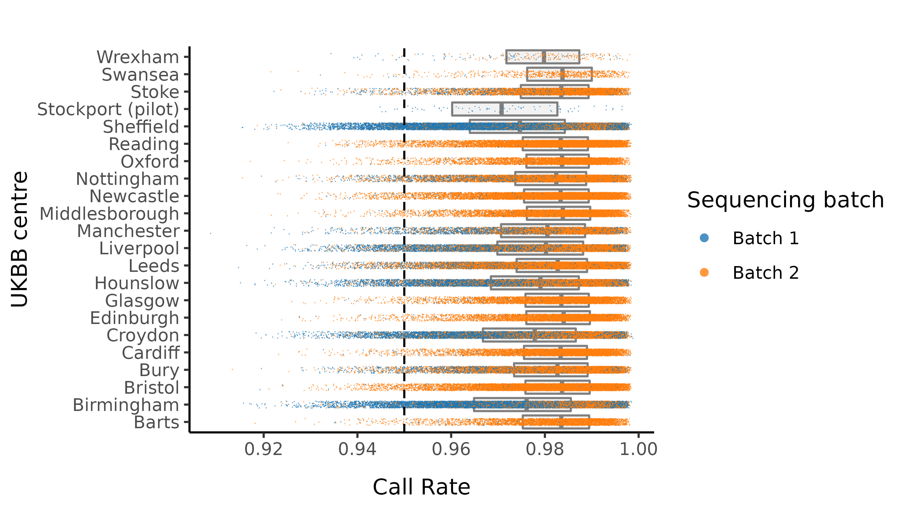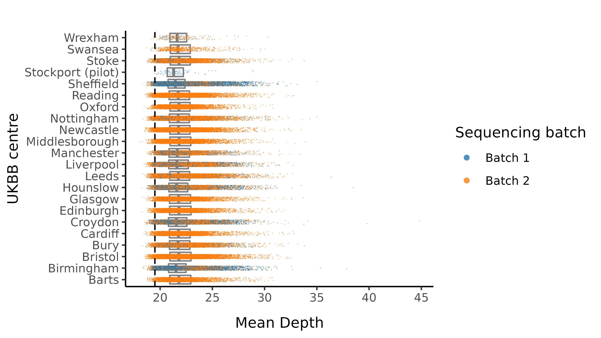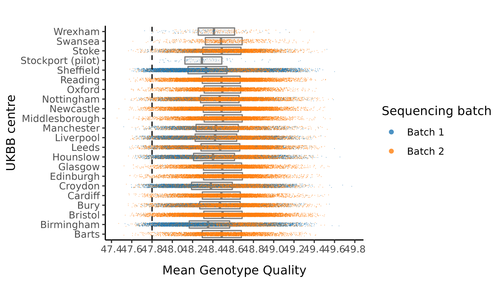
Following this step, we export genotyped variants on the X chromosome (allele frequency between 0.05 to 0.95 with high call rate (> 0.98)) to plink format and prune to pseudo-independent SNPs using --indep 50 5 2. This pruned set of SNPs feeds into the sex imputation step.
We impute the sexes of the individuals with this pruned set of variants on the X chromosome, and create list of samples with incorrect or unknown sex as defined by:
Here we show the distribution of the F-statistic, with the 0.6 threshold defining our sex impututation shown as a dashed line.
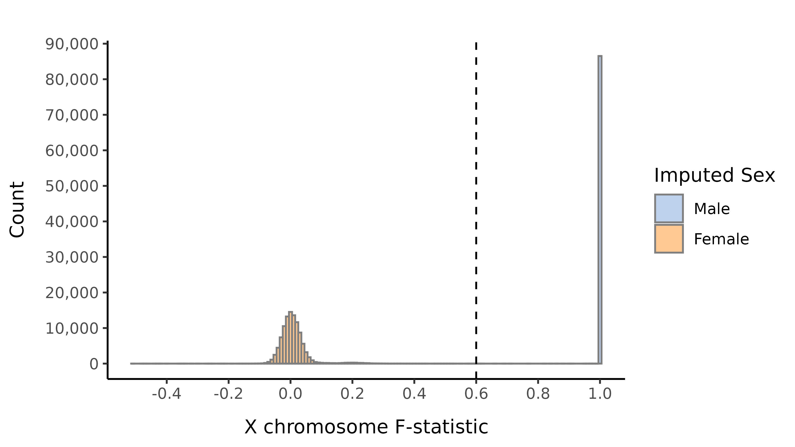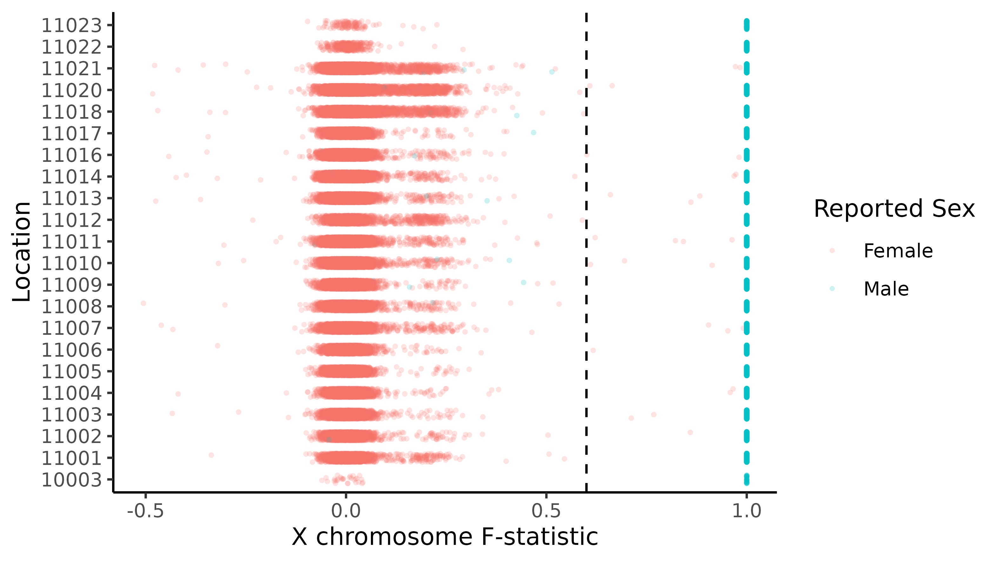
We next perform a number of principal component analysis (PCA) steps to ensure that we have subset down to Non-Finnish Europeans.
Next, we included the 1000 genomes samples (minus the small subset of related individuals within 1000 geneomes), and rerun PCA after including those individuals. Plots of the first six principal components are shown below. 1000 genomes samples are coloured in dark blue.
We restrict to the European subset of individuals to perform analysis to remove Finns. To do this, we train a random forest on the super populations labels of 1000 genomes and predict the super population that each of the BipEx samples. We denote strictly defined European subset as those with probability \(>\) 0.95 of being European according to the classifier. BipEx samples are coloured by their assignment or unsure if none of the classifier probabilities exceeded 0.95 in the following plots.
Samples not assigned to the Non-Finnish European cluster were removed from downstream analysis.
For our final variant filtering step, we first restrict to samples in the strictly defined non-Finnish European subset, filter out samples with incorrectly defined sex or unknown sex, and run variant QC. We then evaluate a collection of variant metrics and remove variants that satisfy at least one of:
The following plot shows the 0.97 threshold for call rate.
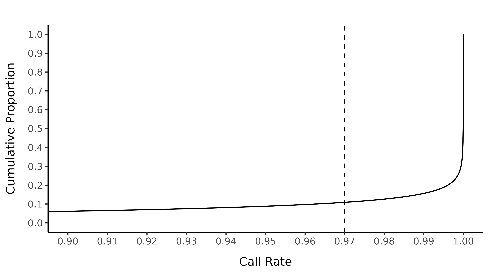
After these steps we plot the resulting changes in metrics across the samples in our data set. Each of this first set plots splits the data by sequencing batch. The first collection of subplots in each figure shows the variant metrics before sample removal, with the lower collection of subplots showing the resultant change after our QC steps. 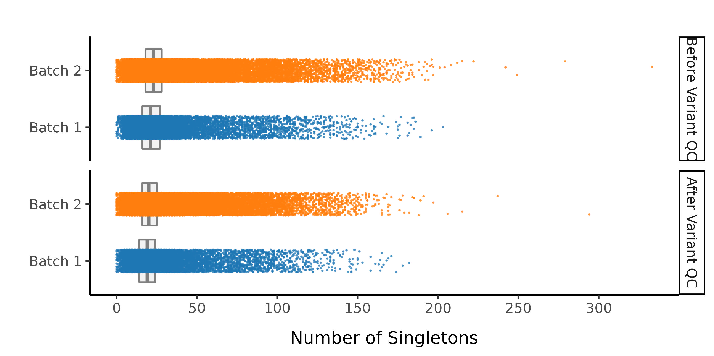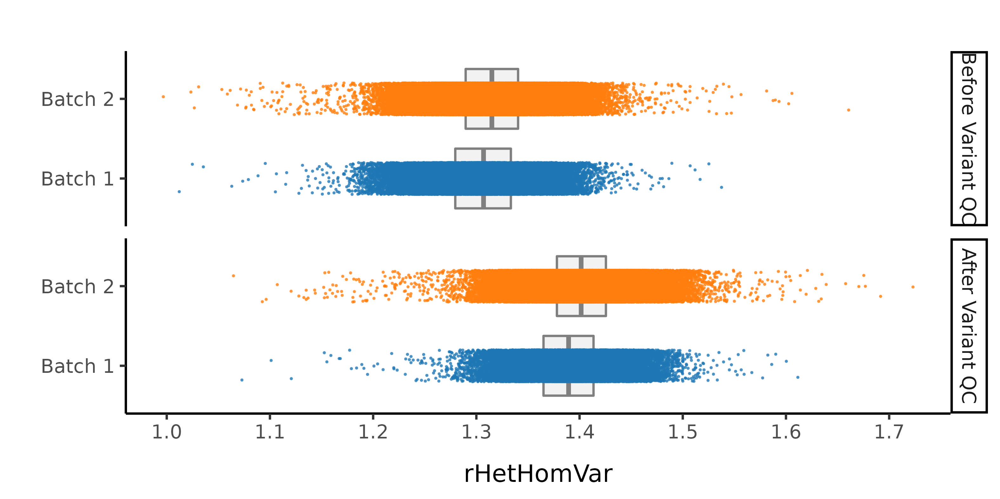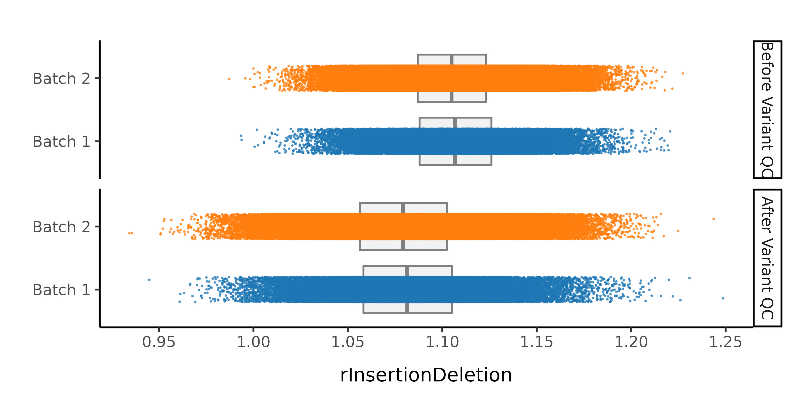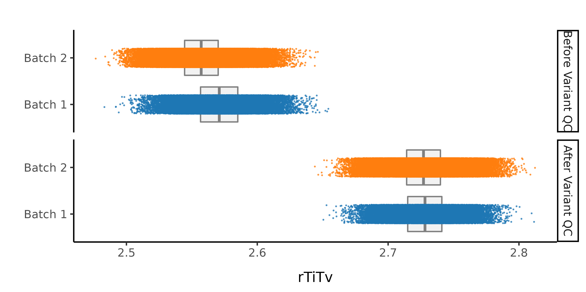 Splitting by UKBB centre and colouring by sequencing batch:
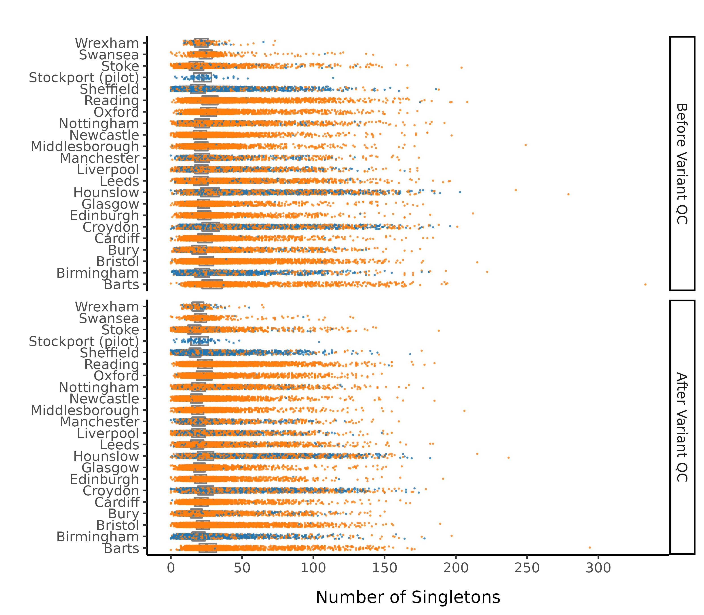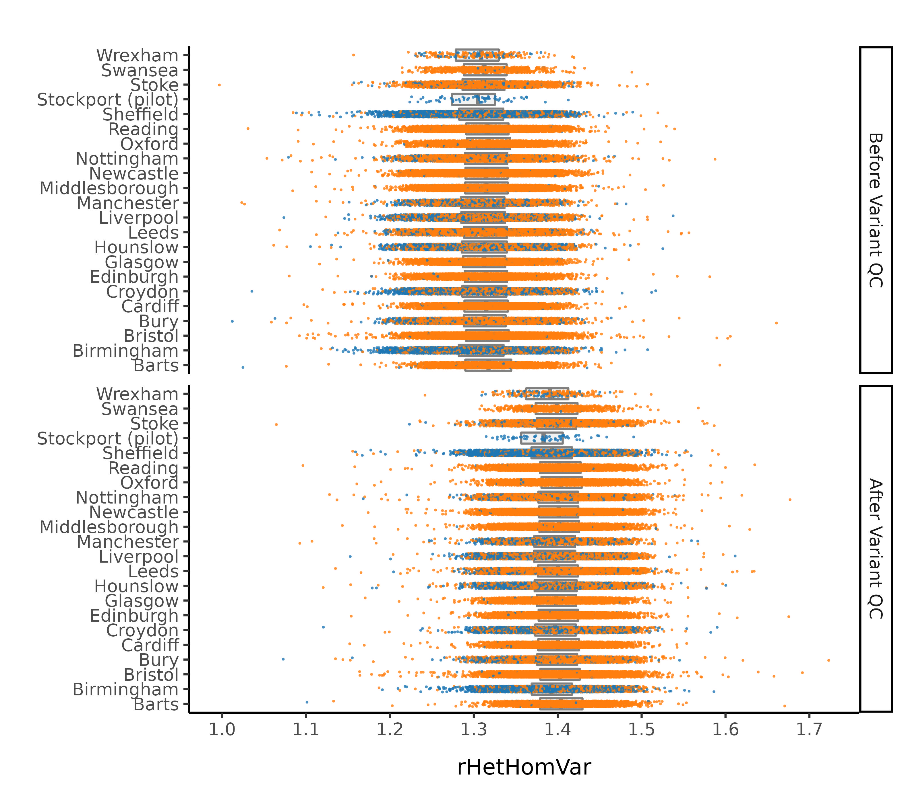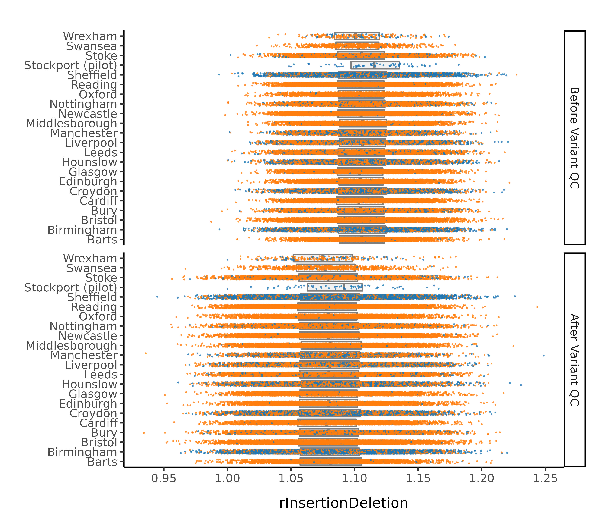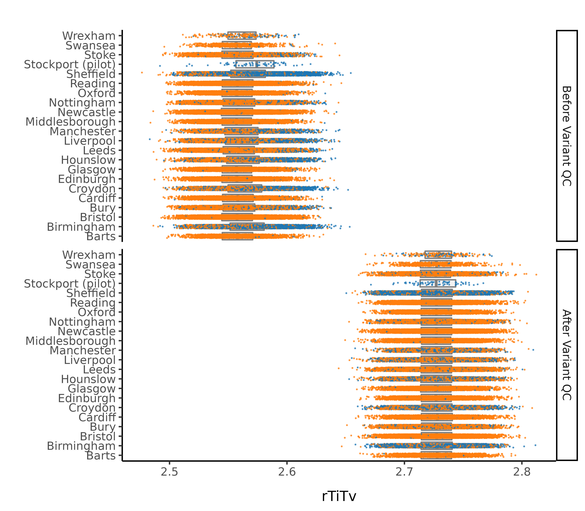
In this step we remove sample outliers after the variant cleaning in the previous step. Samples are removed if at least one of the following lies more than four standard deviations away from the mean:
We also remove samples with over 175 singletons in the dataset.
After all of this data cleaning, we save the resultant hail matrix tables for downstream analyses.
The resultant composition of the samples according to UKBB centre was as follows:
The composition by sequencing batch was as follows: